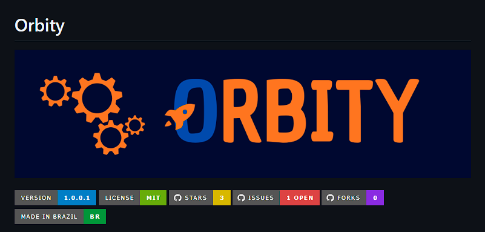
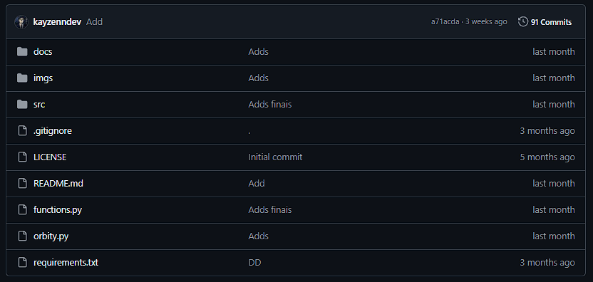

What is Orbity?
Orbity é um projeto de simulação computacional desenvolvido com o propósito de estudar e representar matematicamente o comportamento dinâmico de veículos aeroespaciais durante sua trajetória. O projeto busca aplicar conceitos fundamentais de física, matemática e computação para construir um modelo capaz de descrever a evolução do movimento de um foguete a partir de determinadas condições iniciais e parâmetros físicos.
A proposta central do Orbity consiste na resolução numérica das equações diferenciais que governam o movimento do veículo. Em vez de depender exclusivamente de soluções analíticas, que podem se tornar complexas ou inviáveis diante da presença de múltiplas variáveis e forças não lineares, o sistema utiliza métodos de integração numérica para obter aproximações da trajetória ao longo do tempo. Entre esses métodos, destaca-se o Runge-Kutta, empregado para realizar a integração das equações de movimento com maior precisão e estabilidade numérica.
O modelo considera a atuação de diferentes forças e condições sobre o foguete, permitindo representar de maneira mais realista o comportamento do veículo durante o voo. Entre os principais fatores considerados encontra-se a força gravitacional, responsável pela aceleração do veículo em direção ao corpo celeste, e a resistência aerodinâmica, que se opõe ao movimento do foguete através da atmosfera e cuja intensidade varia de acordo com características como velocidade, densidade atmosférica, área de referência e coeficiente aerodinâmico.
A partir desses parâmetros, o Orbity calcula iterativamente o estado do sistema em diferentes instantes de tempo, possibilitando acompanhar a evolução de grandezas como posição, velocidade e aceleração. Dessa forma, a simulação permite observar como pequenas alterações nas condições iniciais ou nos parâmetros físicos podem modificar significativamente o comportamento da trajetória.
Além da implementação dos modelos físicos, o projeto possui como finalidade proporcionar uma representação computacional que permita a análise e interpretação dos resultados obtidos. Os dados produzidos pela simulação podem ser utilizados para gerar representações gráficas da trajetória e da evolução das variáveis físicas, facilitando a identificação de fenômenos como aceleração, desaceleração provocada pelo arrasto, perda de desempenho durante o deslocamento atmosférico e alterações na velocidade ao longo do voo.
O desenvolvimento do Orbity também está relacionado ao estudo e à aplicação prática de equações diferenciais ordinárias, cálculo numérico, mecânica clássica, dinâmica de corpos, programação e modelagem computacional. A integração dessas áreas permite transformar um conjunto de princípios físicos e matemáticos em um sistema capaz de reproduzir, de forma aproximada, o comportamento de um fenômeno físico complexo.
Por se tratar de uma simulação, o Orbity não busca reproduzir integralmente todas as condições presentes em um lançamento real, mas estabelecer uma base computacional capaz de representar os principais mecanismos envolvidos na dinâmica de um foguete. O modelo pode, portanto, ser progressivamente aprimorado com a incorporação de novos fatores, como variação da massa do veículo devido ao consumo de propelente, modelos atmosféricos dependentes da altitude, variação do coeficiente de arrasto, força de empuxo, rotação do corpo celeste e integração de trajetórias em duas ou três dimensões.
Nesse contexto, o Orbity constitui uma plataforma experimental para o estudo computacional da dinâmica de foguetes, permitindo investigar a relação entre modelos matemáticos e fenômenos físicos por meio de simulações numéricas. A utilização de métodos como Runge-Kutta possibilita tratar o problema de forma sistemática, transformando as equações que descrevem o movimento em informações que podem ser analisadas, visualizadas e posteriormente utilizadas para aprimorar o próprio modelo.
O projeto, portanto, combina física, matemática e programação em uma única aplicação, tendo como foco a construção de uma representação numérica da trajetória de foguetes e a investigação dos fatores que determinam seu comportamento durante o voo. Sua arquitetura foi concebida de maneira extensível, permitindo que diferentes modelos físicos e parâmetros sejam posteriormente incorporados sem alterar fundamentalmente a estrutura da simulação.
No contexto das Olímpiedas Estudantis
A MOFOG e a OBAFOG são iniciativas educacionais ligadas ao ensino de ciência, tecnologia e física de forma prática e interativa. A MOBFOG (Mostra Brasileira de Foguetes), organizada junto da Olimpíada Brasileira de Astronomia e Astronáutica, desafia estudantes a construírem e lançarem foguetes utilizando materiais simples, aplicando conceitos científicos na prática, como pressão, aerodinâmica, impulso e as Leis de Newton.
Durante o desenvolvimento dos foguetes, os participantes precisam analisar fatores como estabilidade, alcance, velocidade e trajetória, transformando teoria em experimentação real. Além do aprendizado científico, a competição incentiva criatividade, trabalho em equipe, pensamento lógico e resolução de problemas.
Foi nesse contexto que surgiu o Orbity, um programa desenvolvido para auxiliar na organização, análise e acompanhamento de lançamentos e informações relacionadas aos foguetes. O objetivo do Orbity é aproximar ainda mais os estudantes da tecnologia e da exploração espacial, oferecendo uma ferramenta moderna que complementa a experiência prática da MOFOG e da OBAFOG.
Github Page
O desenvolvimento do Orbity foi dividido em duas etapas principais. Na primeira fase, o programa realiza cálculos de trajetória utilizando um modelo físico simplificado, considerando apenas as variáveis básicas do movimento e desconsiderando fatores mais complexos, como resistência do ar, vento e outras interferências externas. Dessa forma, o sistema consegue gerar simulações iniciais de maneira mais simples e didática, facilitando o entendimento dos conceitos fundamentais da física aplicada aos foguetes.

Agora, também foi implementada a segunda parte do projeto, responsável por tornar as simulações muito mais precisas e realistas. Nessa etapa, o Orbity passará a utilizar o método numérico de Runge-Kutta juntamente com equações diferenciais, permitindo calcular a trajetória do foguete levando em consideração variáveis físicas mais complexas, como arrasto aerodinâmico, aceleração variável e influência do ambiente no voo. Com isso, o programa evoluirá de uma simulação básica para um sistema mais avançado de modelagem de trajetórias.

References
O Orbity foi desenvolvido tendo como base os conteúdos apresentados na coleção Tópicos de Física, utilizados como referência para a fundamentação dos conceitos físicos empregados no projeto, sob orientação e instruções do professor Dr. Karciano José Santos Silva. A partir dos conteúdos estudados em sala, foram aplicados conceitos relacionados à cinemática, dinâmica, lançamento de projéteis, aceleração, gravidade e resistência do ar para a construção do modelo de simulação.
Para o desenvolvimento computacional, foi utilizada principalmente a linguagem de programação Python, juntamente com bibliotecas voltadas à computação científica, análise matemática e representação gráfica dos resultados. A implementação dos cálculos numéricos teve como base métodos de resolução de equações diferenciais, especialmente o método de Runge-Kutta, permitindo representar de forma aproximada a evolução da trajetória de um objeto ao longo do tempo.
O projeto também envolveu a utilização de ferramentas de desenvolvimento e controle de versão, como Visual Studio Code e Git/GitHub, utilizados respectivamente para a escrita e organização do código e para o armazenamento, versionamento e disponibilização do projeto. O Orbity surgiu da integração entre os conhecimentos teóricos adquiridos por meio do estudo de Física e sua aplicação prática através da programação, utilizando recursos computacionais para transformar modelos matemáticos em uma simulação capaz de representar o comportamento de uma trajetória sob diferentes condições físicas.
Informações
Desenvolvimento do código-fonte: SILVA, M.R.L;
Formulação Matemática: SILVA, K.J.S;
Testes e Validação: SILVA, M.R.L & LIMA, J.G.S;
Bibliografia: HELLOU, Gualter; NEWTON, Villas Bôas; HELOU, Ricardo Doca. Tópicos de Física: Mecânica. Volume 1.
Bibliografia: HELLOU, Gualter; NEWTON, Villas Bôas; HELOU, Ricardo Doca. Tópicos de Física: Termodinâmica. Volume 2.
Bibliografia: RUNGE, Carl. Über die numerische Auflösung von Differentialgleichungen. Mathematische Annalen, v. 46, p. 167–178, 1895.
Bibliografia: KUTTA, Wilhelm. Beitrag zur näherungsweisen Integration totaler Differentialgleichungen. Zeitschrift für Mathematik und Physik, v. 46, p. 435–453, 1901.
Software de Analise: Tracker: Video Analysis and Modeling Tool. Disponivel em: Click Here.